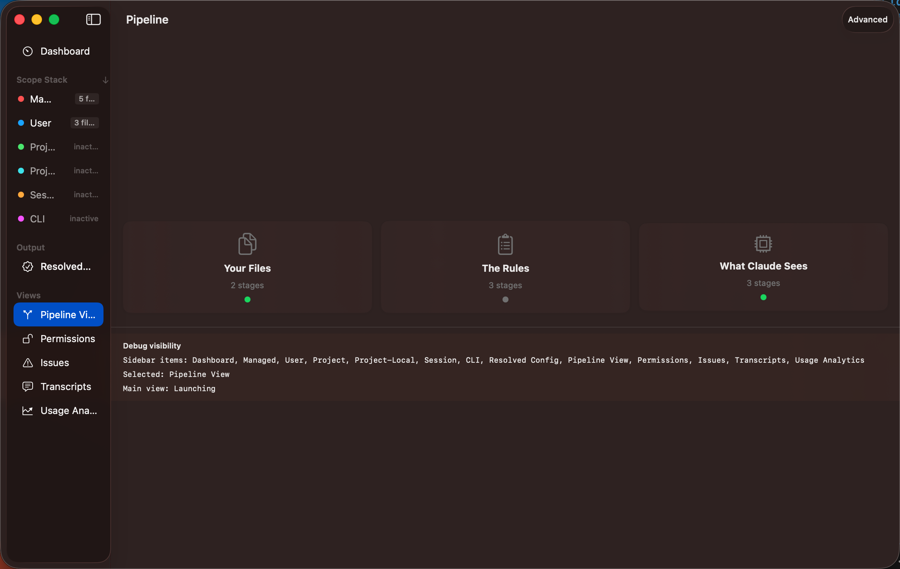

The Pipeline View is the heart of Claude Config Manager. It visualises the eight stages Claude Code goes through when assembling your active configuration — from discovering files on disk through to the final resolved state. Open it from the sidebar or press ⌘5.

The pipeline has two display modes, toggled via the toolbar:
Scans the file system for configuration files across all authorised scopes. Shows a file tree grouped by scope, with status badges (found, missing, error) and file detail popovers.
Each discovered file is parsed into a typed model. This stage shows parsed file summary cards, key extraction results, and any parse issues (syntax errors, invalid types, unknown fields).
Displays hook registrations grouped by event type — pre-parse, post-parse, pre-send, post-response, and others. Shows which hooks fire at each lifecycle point.
Lists all discovered MCP (Model Context Protocol) servers with connection health status and the tool catalog each server provides. Servers can be healthy, warning, or errored.
Shows how Claude Code assembles the system prompt — which instruction layers are included,
where CLAUDE.md content is injected, and how multiple sources merge together.
Displays tool definitions and their availability by scope. Shows which permission rules gate each tool and what execution prerequisites apply.
Estimates token usage across the context window. Shows how the budget is allocated between system prompt, instructions, conversation history, and tool definitions.
The final merge step. For each setting key, shows which scope provided the winning value, the full precedence evaluation, and a waterfall diagram of the merge order. Every resolved value includes a provenance trace back to its source file and line.
A breadcrumb strip at the top shows your position in the pipeline. Click any stage node to zoom in. Scroll between stages, or use the breadcrumb to jump directly. Transitions animate with a brief layout delay for smooth visual flow.